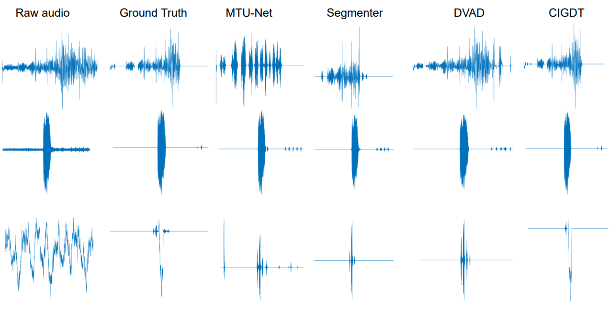

A overall progress of our proposed CIGDTN model. Different modules are marked with different color blocks. The architecture of the main body fuses diffusion transformers (DiTs) architecture and sparse attention diffusion.
Abstract. The audio denoising technique has captured widespread attention in the deep neural network field. Recently, the audio denoising problem has been converted into an image generation task, and deep learning-based approaches have been applied to tackle this problem. However, its performance is still limited, leaving room for further improvement. In order to enhance audio denoising performance, this paper introduces a complex image-generative diffusion transformer that captures more information from the complex Fourier domain. We explore a novel diffusion transformer by integrating the transformer with a diffusion model. Our proposed model demonstrates the scalability of the transformer and expands the receptive field of sparse attention using attention diffusion. Our work is among the first to utilize diffusion transformers to deal with the image generation task for audio denoising. Extensive experiments on two benchmark datasets demonstrate that our proposed model outperforms SOTA models.
A overall progress of our proposed CIGDTN model. Different modules are marked with different color blocks. The architecture of the main body fuses diffusion transformers (DiTs) architecture and sparse attention diffusion.

The comparisons of raw bird audio, ground truth labeled denoised audio, and denoised audio of other models are shown. our model is more resemblant to the labeled denoised signal. As a consequence, these benchmarks confirm that our method for audio denoising is effective, and our model enhances the audio-denoising capabilities of BirdSoundDenoising datasets.
Below some examples:.
| Sample | Raw Input | Ground Truth Audio | Denoised Audio |
|---|---|---|---|
| Sample 1 | |||
| Sample 2 | |||
| Sample 3 | |||
| Sample 4 | |||
| Sample 5 |
When LLM parsing the original natural language input, some adjective or quantifier may be lost, and sometimes the structured inputs' format is incorrect. Dual text encoders can avoid information loss and are more robust in these situations.
| Sample | Raw Input | Clean Audio | Denoised Audio |
|---|---|---|---|
| A strong torrent of rain is audible outside of a window | <strong>Sound of strong torrent of rain outside window & all</strong> | ||
| A motorcycle revving by quickly twice | <motorcycle revving & all>@<quickly twice & end></quickly> | ||
| A car moves quickly and is followed by someone walking and other cars | <car engine revving & start>@<car tires screeching & mid>@<footsteps running & mid>@<other car engines & mid to end> | ||
| A metallic swirling and scraping that gets louder and more irregular | <metallic swirling and scraping & all, getting louder and more irregular>@ | ||
| A gusting wind with waves crashing in the background from time to time | <gusting wind & all>@<waves crashing & random intervals> |